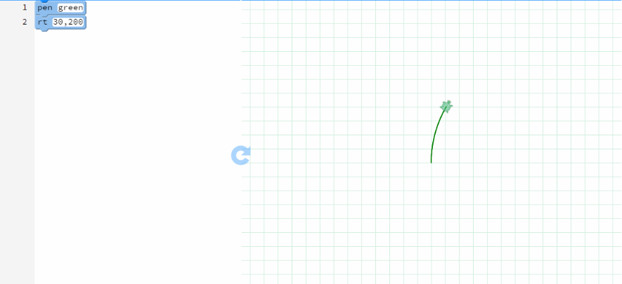

Challenge: A Flower for Spring
Step 1
Step 2
Step 3
Step 4
Step 5
Step 1 Draw a stem
- Drag the pen block onto your canvas and make it green or your favorite color.
- To draw a stem, you can draw a small part of a big circle!
- Drag the rt block onto your canvas. Type 30, then 200 so that you make a slight curve for a circle with radius 200.
- Press the
 button to see the stem grow
button to see the stem grow

Step 2 Draw the first petal
- Now you can draw the petals with little circles.
- First, change the color by dragging the pen block onto your canvas and making it orange or what you like.
- Now, drag an rt block onto your canvas to make a circle.
- To make a smaller, complete circle, you can type in 360, then 20.
- 360 means the line will complete a full circle and 20 indicates the size of the circle.

Step 3 Learning how to turn
- Now you want the turtle to turn a little bit so you can draw another circle petal in a different spot.
- Drag our new favorite rt block onto your canvas.
- If you enter a value, like 90, the turtle will turn right by 90 degrees.
- Only enter one value in the rt block for the turtle to turn!
Step 4 Finish drawing all the petals
- Once the turtle is turned 90 degrees right, you can draw a new circle petal.
- To draw a circle petal, repeat the steps from the first petal.
- Drag the rt block onto the canvas and type in 360, then 20.
- After your second petal is complete, the turtle must turn again before you make a new petal.
- To turn the turtle, drag an rt block and only fill in one value, like 90 for the turtle to turn 90 degrees right.
- Repeat the circle petal steps and keep turning the turtle until you have enough petals.

Step 5 Fill it in and you've got a flower!
- Now the super fun part: fill in your flower.
- Drag the fill block onto your canvas.
- Select a nice complementary color, like yellow.
- Your flower is done. It's basically spring. Hooray!